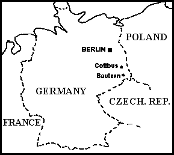

Autorem tego tekstu jest Krzysztof Fornalski.
Bogowie S³owian
NA POCZ¥TKU BY£ CHAOS...
Religia naszych przodków wywodzi siê z rdzenia indoeuropejskich religii politeistycznych. Jak sama nazwa wskazuje wierzono w wielu równorzêdnych bogów. Niektórzy dla danego plemienia byli wa¿niejsi ze wzglêdu na rodzaj wykonywanej pracy. Dla np. rolników znaczenie mia³a gleba, dla rybaków woda itp. Wynika tak¿e st¹d fakt, i¿ nasi przodkowie bosk¹ si³ê upatrywali w przyrodzie. Dlatego te¿ religia naszych przodków by³a tzw. religi¹ naturaln¹ opart¹ na prawach "d¿ungli". My wszyscy (tj. Polacy) jesteœmy S³owianami, przodkami tych wielkich wojowników. Jednak S³owianie to nie tyko Polacy. S³owian w œwiecie jest blisko pó³ miliarda, co stanowi ponad 5% ziemskiej populacji- to bardzo du¿o.
W ci¹gu ostatniego tysi¹ca lat S³owianie przestali byæ jednym narodem i podzielili siê na szereg mniejszych. Na pocz¹tku by³o ich 3 - na zachodzie, wschodzie i po³udniu. Dlatego te¿ dzisiaj dzieli siê S³owian w³aœnie na te trzy grupy. Do narodów S³owian zachodnich nale¿¹: Polacy, Czesi, S³owacy, £u¿yczanie (jest to najmniejszy naród s³owiañski zamieszkuj¹cy £u¿yce w Niemczech - polecam lekturê w Internecie! Ich piêkny hymn w mojej aran¿acji mo¿na œci¹gn¹æ tutaj. Do S³owian wschodnich nale¿¹: Rosjanie, Ukraiñcy, Bia³orusini, £emkowie (ci te¿ nie maj¹ w³asnego kraju). Do S³owian po³udniowych nale¿¹: S³oweñcy, Chorwaci, Boœniacy, Serbowie, Czarnogórcy, Macedoñczycy, Bu³garzy. Jednak mnie najbardziej interesuje starodawna religia naszych przodków...
ERA CHRZEŒCIJAÑSTWA
W roku 1168 Duñczycy zniszczyli ostatni¹ na œwiecie czynn¹ œwi¹tyniê S³owian, która mieœci³a siê w Arkonie (dzisiejsze Niemcy). Jednak ca³kowita chrystianizacja naszych przodków rozpoczê³a siê po wybudowaniu wielu koœcio³ów i przez to wprowadzeniu tzw. sieci parafialnej. Ostatnie pras³owiañskie rytua³y odbywa³y siê w Polsce a¿ do koñca œredniowiecza, kiedy to sta³y siê karalne. Jednak wiele pozosta³oœci w œciœle zmienionej formie pozosta³o a¿ do prze³omu XIX i XX wieku (czyli do czasu zaniku kultury ch³opskiej, która by³a ca³kowicie odizolowana od miast). A jednak coœ pozosta³o. Nawet sobie nie zdajemy sprawy, i¿ to COŒ jest nam bardzo dobrze znane. Ka¿dy z nas lubi ubieraæ choinkê w œwiecide³ka, czasem dostanie pod ni¹ ruzgê. Lubimy tak¿e malowaæ pisanki, zapalaæ œwiece na grobach i kolêdowaæ. A ile¿ to razy spluniemy przez lewe ramiê, gdy nam czarny kot przebiegnie drogê lub gdy ujrzymy kruka tego¿ w³aœnie koloru. Dlaczego boimy siê wychodziæ sami do lasu mówi¹c, i¿ "Licho nie œpi"? Dlaczego urz¹dzamy stypê ku czci zmar³ego? Dlaczego boimy siê nocnej Zmory? A Wilko³aki i Wampiry? A ró¿ne œwiêta? Do¿ynki, Zaduszki, topienie Marzanny i wiele innych? Oto s¹ symbole naszych pras³owiañskich korzeni! Przecie¿ Marzanna to s³owiañska boginka zimy, Licho to duch leœny (starsi ludzie pamiêtaj¹ tak¿e Ubo¿ê), Zmora to zjawa napadaj¹ca cz³owieka we œnie, Wampir i Wilko³ak to nie horror z Hollywood, lecz potwory znad Wis³y! Powiedzmy sobie prosto w oczy- wierzymy w wiele duchów i przes¹dów - to ca³kiem normalne! To wszystko jest pozosta³oœci¹ po naszej dawnej arcyciekawej religii, która przez sformu³owanie "poganizm" nabra³a pejoratywnego znaczenia...
Religia staro¿ytnych S³owian jest religi¹ politeistyczn¹ przejawiaj¹c¹ pewne podobieñstwa do religii innych ludów indoeuropejskich. Tak wiêc nasi przodkowie dzielili swych bogów na 3 g³ówne grupy: w³adzy zwierzchniej, walki zbrojnej oraz pomyœlnoœci gospodarczej. W zwi¹zku z masow¹ chrystianizacj¹ na pocz¹tku drugiego tysi¹clecia naszej ery wiele zabytków dawnej kultury S³owian zosta³o zniszczone. Dzisiaj Ÿróde³ rodzimej wiary naszych przodków jest niewiele - najstarsze pochodz¹ z VI wieku. Jednak dociekliwi badacze i historycy na podstawie tych materia³ów i, jak¿e wa¿nych, podañ ludowych odtworzyli zarys religii przodków.
S£OWIAÑSKI ZEUS
G³ównym bogiem staro¿ytnych S³owian by³ gromow³adny Perun znany w ca³ej S³owiañszczyŸnie niekiedy pod trochê zmienionymi nazwami. Jego pos¹g istnia³ m.in. w Kijowie ju¿ w 944 roku. W 980 jego wyobra¿enie (oraz podobizny innych bogów) ustawi³ ks. W³odzimierz, jednak zniszczy³ je po swym chrzcie w 988 r. Sanktuarium Peruna istnia³o tak¿e w okolicy Nowogrodu Wielkiego. W Polsce (acz nie ca³ej) znany by³ jako Pierun (g³ównie Ma³opolska), gdy¿ zmiêkczanie liter G i P by³o tutaj bardzo powszechne. Gdzie indziej (te¿ w Polsce) nazywano go Pieronem. Dzisiaj ta nazwa ma ca³kowicie pejoratywne znaczenie. Przypomnijmy sobie pewne wyra¿enie z naszego codziennego jêzyka. Gdy nam coœ wychodzi nie tak jak powinno, g³oœno mówimy: "Pieron jasny!", prawda??? WyobraŸcie sobie, i¿ ok. 1000 lat temu to sformu³owanie znaczy³o tyle, co dzisiejsze "Bo¿e drogi!". Powiedzenie "Pieron jasny" zosta³o spejoratyzowane przez Koœció³ by odci¹gn¹æ od niego ludnoœæ. Nic wiêc dziwnego, i¿ dzisiaj dla nas to po prostu (brzydko mówi¹c): "Kurde!". Religia S³owian by³a religi¹ przyrody, dlatego te¿ kolejne, które podam okreœlenie najpotê¿niejszego boga przodków nikogo chyba nie zaskoczy - nazywano go tak¿e... po prostu Piorunem. Tyle co do Polski. W zasadzie s³owo Perun w odniesieniu do boga by³o znane na ca³ej S³owiañszczyŸnie, lecz by³y miejsca, gdzie czczono najwy¿szego pod inn¹ nazw¹. Po³abskimi odpowiednikami na przyk³ad byli Œwiêtowit (b³êdnie nazywany Œwiatowitem, Swantewitem lub, kompletnie ignorancko, Œwiatowidem). Œwiêtowit to bóg wojny i urodzaju Ranów (jednego z plemion po³abskich na terenie dzisiejszych Niemiec - wyspa Rugia) to¿samy z Perunem i Rugiewitem. G³ównym oœrodkiem kultu Œwiêtowita by³a Arkona, gdzie w œwi¹tyni znajdowa³ siê ogromnych rozmiarów czterog³owy, drewniany pos¹g z rogiem obfitoœci w d³oniach, corocznie nape³niany winem w trakcie œwiêta zwanego Libacj¹ (i znów mamy przyk³ad zmienionego, na pejoratywne, znaczenia; dzisiaj libacja to popijawa). W Arkonie istnia³a s³ynna wyrocznia, dziêki której kap³an decydowa³ o polityce plemienia (do wró¿b wykorzystywano konia poœwiêconego bóstwu i rzucanie losów), oraz skarbiec œwi¹tynny pe³ni¹cy funkcjê skarbu publicznego Ranów (zwanych te¿ Rugianami). Kap³an dysponowa³ te¿ dru¿yn¹ boga licz¹c¹ 300 konnych. Jak ju¿ wspomnia³em innym uto¿samieniem Peruna by³ Rugiewit. By³ on bogiem wojny Rugian. Jego pos¹g o 7-miu twarzach znajdowa³ siê w œwi¹tyni w Korzenicy (Gardziec Rugijski, obecnie niemiecki Garz), by³o to te¿ miejsce kultu Porenuta i Porewita. Rugiewit by³ czczony te¿ pod imionami Œwiêtowita i Peruna jak ju¿ wczeœniej poda³em. Dodaæ nale¿y, i¿ po³abski Jarowit te¿ mo¿e byæ z nim uto¿samiany, lecz nie wszyscy badacze s¹ co do tego zgodni. Tak wiêc wszystkie wyt³uszczone nazwy w powy¿szym tekœcie odnosz¹ siê do jednego g³ównego boga S³owian - Peruna.
PANTEON BOGÓW S£OWIAÑSKICH
Jak ju¿ wspomnia³em we wstêpie, religia S³owian jest religi¹ indoeuropejsk¹. A wszystkie te religie maj¹ jedn¹, bardzo wa¿n¹, cechê. Jak pamiêtacie z mitologii zarówno Greków jak i Rzymian, by³ jeden bóg i bogini, którzy mieli siedmioro (ta liczba jest sta³a zawsze!) dzieci, z których najsilniejszy syn pozbawi³ ojca w³adzy (jak Zeus). Tak wiêc s¹dzê, i¿ takie coœ mia³o miejsce i w naszej starej religii. To jest bardzo œmia³e stwierdzenie, lecz nie pozbawione podstaw. Tak wiêc s¹dzê, i¿ takim prabogiem i ojcem bogów u S³owian by³ prawie zapomniany Trzyg³ów (Triglav) - pan nieba, ziemi i piek³a. Mia³ od 7 dzieci: Wio³osa, Swaroga, Chorsa, Strzyboga, £adê, Peruna i Mokoszê. Poni¿ej przedstawiam ich charakterystykê:
- Wo³os (Weles) - w³adca magii, kl¹twy, przysiêgi, zaœwiatów, byd³a i raju- czyli Nawii).
- Swaróg - bóg S³oñca. Mia³ 3 synów: Swaro¿yca (ogieñ ofiarny i domowy), DadŸboga (dawca bogactw), Radogost (Redigost lub Radost- np w Górach Œwiêtokrzyskich jest Góra Radostowa).
- Chors - bóg Ksiê¿yca. Mia³ córkê £unê.
- Strzybóg - bóg pogody i klimatu. Mia³ trójkê dzieci: P³anetnika (bo¿ka chmur, którego dzieæmi by³y demony Wiatry), Godê i Pogodê (która by³a matk¹ Œwista i Poœwista)
- £ada - bogini wojny. Ma trójkê dzieci: bliŸniaków Lela i Polela oraz córkê Bodê.
- Perun - odpowiednik mitycznego Zeusa gromow³adnego, najpotê¿niejszy z bogów, pan nieba i piorunów. Jego ¿on¹ jest Perperuna i maj¹ trzech synów (bardzo wa¿nych dla S³owian): Œwiêtowita (boga wojny i urodzaju), Jarowita (bóg wojny i zwyciêstwa - przed wypraw¹ sk³adano mu konia w ofierze) oraz Rugiewita (równie¿ boga wojny, Rugiewit mia³ 2 synów: Porenuta i Porewita)
- Mokosz - bogini natury, Matka Ziemia (jak Demeter u Greków). Mia³a czwórkê dzieci: Jary³ê (boga rolnictwa), Dolê (bogini ludzkiego losu), Roda (boga p³odnoœci i narodzin dziecka. Pomaga³y mu w tym jego liczne córki- Rodzanice- które bra³y pod opiekê ludzki los) oraz Ubo¿ê (dobry duch domowy).
Tyle jeœli chodzi o panteon bogów S³owiañskich (tych g³ównych). Oprócz nich mamy jeszcze szereg innych bóstw nie wchodz¹cych w sk³ad gromow³adnej rodzinki. S¹ to m.in. ró¿nego rodzaju Skrzaty, dobre duszki lasu, bóg prawa i sprawiedliwoœci Prowe, czy bóg Simarg³. Jednak ¿ycie nigdy nie jest usiane p³atkami ró¿ i zawsze jest ta ciemna strona mocy. Tak by³o i u naszych przodków. Jednak ciê¿ko wyró¿niæ odpowiednika szatana, bo okreœlenie DIABE£ jest sporne i mo¿e pochodziæ od Chrzeœcijañstwa. Najbardziej bliskim mu ciemnym charakterem jest ¯mij - odwieczny wróg nieba, który nienawidzi Peruna. Do innych nale¿¹ Wilko³aki, Wampiry (W¹pierze), Rusa³ki, Chochliki, Licha, Topielce, a tak¿e bóg najprawdopodobniej odrzucony od rodziny królewskiej - Perep³ut - który rz¹dzi ¿ywio³em wody. Jednak nie jest on ca³kowicie ciemnych charakterem, bo zsy³a deszcze, rodzi ryby i daje czyst¹ wodê. Niebezpiecznym bo¿kami s¹ te¿ Regr i Poregr.
To co napisa³em, to s¹ moje prywatne opinie i badania, z którymi nie koniecznie ka¿dy mo¿e siê zgodziæ. Jednak nasi dawni bogowie s¹ tak arcyciekawi, ¿e z pewnoœci¹ niejednego z Was to zainteresuje!
WYMIERAJ¥CY LUD
To jest element naszej kultury, która mo¿e umrzeæ... niestety. Pamiêtajmy o tym, ¿e jesteœmy S³owianami z krwi i koœci i zawsze nimi bêdziemy. Dzisiaj nam nic nie zagra¿a, ale na naszych oczach (a raczej z boku, niewidoczny) umiera jeden z naszych bratnich narodów S³owiañskich - £u¿yczanie. Wspomnia³em ju¿ o nich nieco we wstêpie, ale powiem wiêcej. Za Mieszka I £u¿yce nale¿a³y do Polski. Dzisiaj w granicach naszego kraju jest tylko niewielki skrawek tych ziem, a takimi znanymi miastami (polskimi) s¹ m.in. Zgorzelec, Forst czy Gubin. Od najdawniejszych czasów £u¿yczanie rozdzielali Niemców od Polaków. Jednak gdy Polska podupad³a, Germanie na dobre zapuœcili swe korzenie w ich piêknej ziemi. Przesta³o istnieæ Ksiêstwo Miœnieñskie, a £u¿yce sta³y siê (niczym nasz Œl¹sk) punktem masowego osadnictwa niemieckiego.

Dzisiaj miasta ³u¿yckie le¿¹ w wiêkszoœci w Niemczech (troszkê w Polsce i troszkê w Czechach), a najs³awniejsze z nich to: Meissen (Miœnia), Cottbus (Chociebu¿), Bautzen (Budziszyn), Wiesswasser (Bia³a Woda - w oryginale: Bie³a Woda), Lobau (Lubiniec). Same £u¿yce dziel¹ siê na pó³nocne i po³udniowe. Tak samo jêzyk ³u¿ycki ma 2 dialekty. Przed II wojn¹ œwiatow¹ £u¿yczanie (sami siebie nazywaj¹ Serbami £u¿yckimi) byli doœæ liczn¹ grup¹ (ok. 300 tys.) i stanowili wiêkszoœæ na tych niemieckich ju¿ ziemiach, a gdzieniegdzie by³y ca³e miejscowoœci czysto³u¿yckie. Jednak czubek Hitler wiêkszoœæ £u¿yczan wymordowa³ i zosta³a tylko garstka. Po upadku faszyzmu £u¿yczanie b³agali na kolanach Stalina, aby ten da³ im wolne pañstwo po ponad 800 letniej okupacji - tak siê nie sta³o. Po wojnie ich liczebnoœæ wzros³a do ok. 100 tys. Jednak dzisiaj na skutek wielkich migracji na zachód spowodowanej bied¹ we wschodnich Niemczech, mass-mediów wymuszaj¹cych znajomoœæ niemieckiego, bardzo du¿a liczba £u¿yczan zasymilowa³a siê i wyjecha³a z £u¿yc. Niegdysiejsze czysto³u¿yckie wioski zaczê³y przyci¹gaæ (za komuny jeszcze) fale robotników do fabryk tam budowanych i tak stopniowo £u¿yce umiera³y... i ju¿ prawie umar³y. Dzisiaj szacuje siê, ¿e £u¿yczan jest ok. 60 tys., z czego tylko 20 tys. mówi p³ynnie swym jêzykiem. I to g³ównie na po³udniu, bo £u¿yce Pó³nocne prawie w ogóle siê "od³u¿yczy³y". Co prawda dzia³a radio ³u¿yckie, czy gazeta w tym jêzyku, ale dzisiaj nikomu nie op³aca siê tam mówiæ jêzykiem przodków - uwa¿aj¹ siê za Niemców.
£u¿yce dzisiaj s¹ obszarem dwujêzykowym. Wszystkie tablice nazwy miast, ulic, druki urzêdowe pisane s¹ po niemiecku i ³u¿ycku. Jednak wszyscy urzêdnicy to Niemcy i nikt nie odpowie takiemu £u¿yczaninowi w jego jêzyku. Od niedawna na £u¿ycach dzia³a szkolny program "Witaj" (to oryginalna ³u¿ycka nazwa), dziêki któremu w szko³ach s¹ klasy ³u¿yckie prowadzone po ³u¿ycku i najm³odsze pokolenie uczy siê kultury swych dziadów. Ale czy to wystarczy? Dzisiaj aby nie zatraciæ to¿samoœci narodowej, trzeba mieæ niepodleg³e pañstwo - a tego jednego brak £u¿yczaninom. Jak tak dalej pójdzie, to na pocz¹tku XXII wieku nie bêdzie ani jednego £u¿yczanina.
Jeszcze jedn¹ rzecz chcia³em poruszyæ - a mianowicie jêzyk Serbów £u¿yckich. Ma³o kto wie, ¿e £u¿yczanie to potomkowie... Polaków! W III w. n.e. wyemigrowali z naszych piêknych gór do dzisiejszych £u¿yc i tam osiedlili siê. Ich jêzyk podlega³ wp³ywom niemieckim, czeskim i po³abskim, lecz jest to obcy nam jêzyk NAJBARDZIEJ ze wszystkich podobny do polskiego! (lepiej ni¿ s³owacki!). Oto przyk³ad tekstu z Serbskiego Kodeksu Narodowego: "Serbski lud a ku¿dy Serb ma prawo na zachowanje swojeje narodneje identity w starodawnem sedleñskem - £u¿icach". Trochê zalatuje czeskim, ale brzmi swojsko! Dodatkowo polecam przes³uchanie drugiej wersji hymnu £u¿yc aran¿owanego przez mnie oraz obejrzenie mapki, gdybyœcie mieli k³opoty z odnalezieniem "Serbskiej macicy" (cytat z hymnu). Oficjaln¹ stronê £u¿yc znajdziecie po wpisaniu w przegl¹darce "Domowina".
Tak wiêc do zobaczenia w Nawii - S³owiañskim raju i niech pozostanie Wam w sercu najstarsze s³owiañskie s³owo na po¿eganie: SLAWA!!!
Krzysztof Fornalski
|